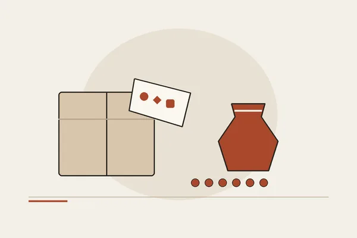

Paper · 2019–2023
The texts as labels for goods and permits, not names
Bahata Ansumali Mukhopadhyay · Humanities and Social Sciences Communications (2019, 2021, 2023)

In a sentence
Stroke signs as units of measure, crop signs as goods, and no personal names.
In plain words
Mukhopadhyay reads the inscriptions as practical labels: what a parcel holds, how much, and who may pass, rather than people’s names. Stroke signs would be units whose value depends on the goods, and some signs would stand for crops or other commodities. In 2025 she proposed the fish signs mean gems.
Technical detail
Logographic or semasiographic “formalised data carriers”: metrological strokes, commodity signs after numerals, the jar as a phrase-final function sign, Kanmer tablets as gate passes; pīlu “elephant/tooth” as a loanword (2021); fish = maṇi “gem” (2025, SSRN 5079207).
How we read it
Read: partial (full text of the 2019 Palgrave Communications article, the 2021 Humanities and Social Sciences Communications article and the 2023 Humanities and Social Sciences Communications article, read from the open HTML pages; the 2023 article was read by section, with Abstract, the names, numerals, reverse-side tablets, craft-area, Kanmer and Conclusions sections read closely; the 2025 SSRN paper (5079207) returned 403 and was not read, not even its abstract). Sources opened: www.nature.com/articles/s41599-019-0274-1, www.nature.com/articles/s41599-023-02320-7, www.nature.com/articles/s41599-021-00868-w, papers.ssrn.com/sol3/papers.cfm?abstract_id=5079207.
What they did
- In 2019 Mukhopadhyay analysed sign combinations by hand in the Mahadevan corpus as enhanced in 1980 (IDF-80), counting distinct inscription-lines rather than objects.
- She sorted signs into functional classes, such as lexemes, phrase-final signs, connectives, numerals, crop signs and metrological signs, using where signs stand alone, where they end lines and which signs never occur together.
- In 2021 she argued from words outside the script: Akkadian, Hurrian and Old Persian words for elephant and ivory were borrowed from an Indus word pīlu, which she derives from a Proto-Dravidian word for tooth.
- In 2023 she combined script-internal patterns with find contexts (city gates, craft areas, weights, warehouse sealings, the Kanmer pendants) to argue that seals and tablets served taxation, licensing, trade control and access control.
- The 2025 SSRN paper proposing fish = maṇi ‘gem’ could not be opened, so it is not summarised here.
What they found
- 2019: 79% of the 2,906 inscribed objects in IDF-80 carry a single line of text, and about 70% of distinct lines have 1-5 signs (Methods and structural analysis sections).
- 2019: of 1,998 usable distinct lines, 1,293 (65%) end in one of 12 phrase-final signs; she lists 22 numeral signs and 49 signs that stand alone as lexemes by four isolation criteria (28, 16, 9 and 2 signs).
- 2019: co-occurrence restrictions point to logograms; two crop signs occur in 162 and 137 lines but never together, no line has two of the PPF signs (309 lines), and PF1 occurs in 1,338 lines with only 41 having two copies (section on logographic nature).
- 2019: 254 signs were classified as lexemes or function signs and 163 left unclassified, of which 133 (81%) occur in 1-5 lines (classification section).
- 2021: she argues the loanword chain pīlu > Akkadian pīru/pīri and Old Persian pîruš shows that many Indus people used a Proto-Dravidian tooth-word, so a significant part of the population spoke ancestral Dravidian languages (Abstract; Conclusion).
- 2023: she argues the inscriptions encoded no personal names or place names, pointing to stroke + sign sequences that recur with many different stroke counts and to texts with several fish signs side by side (section ‘Indus-inscriptions did not encode names of individual seal-owners’).
- 2023: ICIT holds around 600 tablets with one inscribed face and more than 800 with two to four faces; she reads the numerical and metrological expressions found almost only on reverse faces as fixed license fees or slabs, and the obverse as the licensed activity (section on reverse-side numerical expressions).
- 2023: ICIT records around 210 inscribed sealings, and she cites Kharakwal et al. 2012 (p. 832) for the Kanmer clay pendants as possible identity cards or passes (sealings and Kanmer sections).
Strengths and limits
- The 2019 class analysis is careful and gives counts that can be checked directly against the same corpus.
- None of the co-occurrence claims is tested against a null; ‘never together’ for two signs of 162 and 137 lines may or may not be surprising, given that most lines are short.
- The 2023 functional reading rests on qualitative find-context arguments; the project’s own administrative and toponym tests (atlas 5.1, 5.4) found no positive structure, which fits her ‘no toponyms’ point but not any specific office structure.
- The 2021 argument is about language, not the script, and depends on etymologies that specialists may contest; it gives no sign values.
- The fish = gem claim (2025) could not be checked here because SSRN blocked the request.
What the authors say comes next
- Study the semantic roles of each sign class, for example how metrological signs relate to PF1, the substantive uses of numerals, how pre- and post-connectives relate, and numeral + crop collocations. (2019, Conclusion)
- Trace pictorial signs to the real objects they depict, and check whether the signs of one class belong to one socio-economic domain. (2019, Conclusion)
- Consult early Indian literature and Mesopotamian and BMAC evidence to narrow meanings. (2019, Conclusion)
- Use the narrowed semantic scope (taxation, licensing, commodity and access control) to guide future decoding attempts. (2023, Conclusions)
Ideas it gives us
- Put her class-exclusivity claims under a null: for each pair she reports as never co-occurring (the two crop signs, the PPF signs, repeated PF1), compute how often two signs of those frequencies would share a line by chance under a length- and position-preserving shuffle, on dev then held-out families. Mutually exclusive slot fillers are a cheap, language-free signature of a paradigm or logogram class; her counts were never tested, and atlas 7.4 tested graphic modifiers, not these classes. Open data enough: yes. Needs: M77 texts with M-numbers matched to her sign classes (her figures give sign images, so the mapping needs a manual concordance), existing family splits.
- Test her license-slab reading of two-sided tablets: if the reverse expression is a fee tied to the licensed activity, tablets with the same obverse text should carry the same reverse expression more often than shuffled pairs, across sites and phases. It is a direct prediction of the 2023 paper; atlas 5.1 P11 and 6.5 looked at whether reverse values are fixed, but not at obverse-reverse pairing consistency. Open data enough: yes. Needs: ICIT tablet records with both faces and site; the project already holds ICIT.
- Check whether fish signs are over-represented on objects from bead-making units, as the fish = gem reading predicts, with the power calculation done before any data are joined. It is her most recent concrete prediction; the assemblage test showed the Chanhu-daro bead factory holds only 5 non-seal texts, so a power check must come first. Open data enough: no. Needs: Find spots of inscribed objects in bead workshops (Chanhu-daro, Harappa Mound E/ET, Dholavira), which are not in open sources; the 2025 paper itself was not read here.
What we take from it
Next to testA first test found no sign tied to a craft at two sites, but it had too little data to tell. The fish = gem prediction needs find spots from bead workshops, which we have asked excavators for.
The idea we are borrowing
Check whether fish signs cluster at bead-making sites, as the “fish = gem” reading predicts
Where it stands: Next to test.